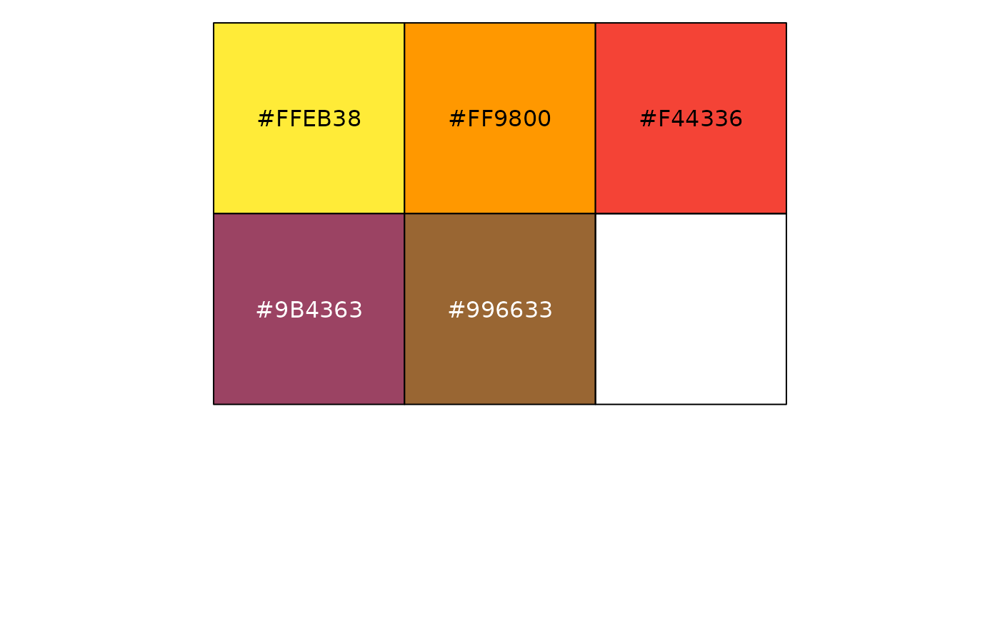

Returns a character vector of hex colour codes for the requested palette. The vector carries
a type attribute ("nominal", "diverging", or "sequential") used internally by
stem_palette_gen().
Value
Character vector of hex colour codes with a type attribute
("nominal", "diverging", or "sequential").
Examples
# Returns a plain character vector
stem_palette("modern")
#> [1] "#35978F" "#80CDC1" "#B0C89F" "#DFC27D" "#BF812D"
#> attr(,"type")
#> [1] "diverging"
# Inspect the palette type
attr(stem_palette("modern"), "type")
#> [1] "diverging"
# Use with scales package for inspection
scales::show_col(stem_palette("nom1"))
